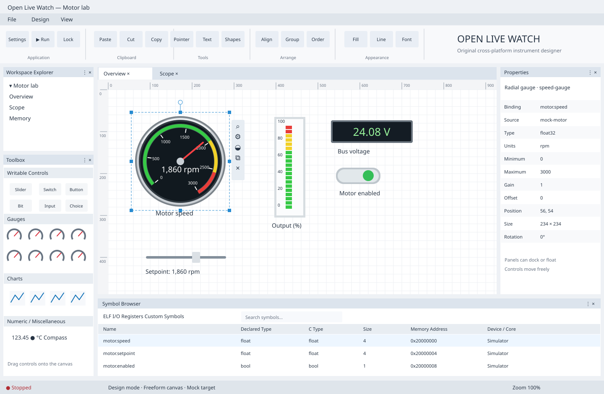
dashboard-concept
MIT licensed. Static design starters; instrument behavior remains to implement.

dashboard-concept
add
align
chart
connect
disconnect
export
grid
lock
log
memory
open
play
redo
save
scope
search
settings
stop
terminal
undo
unlock
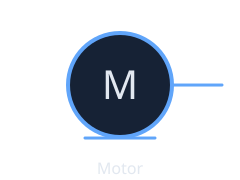
motor
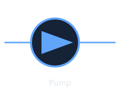
pump
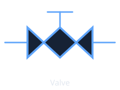
valve
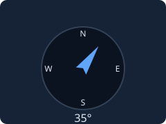
compass
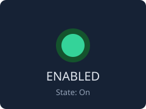
led
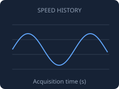
line-chart
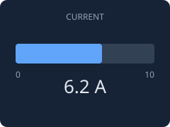
linear-gauge
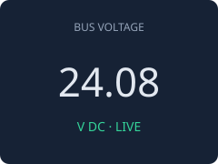
numeric-display
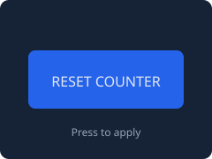
push-button
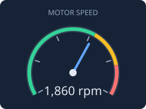
radial-gauge
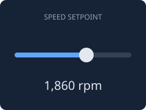
slider
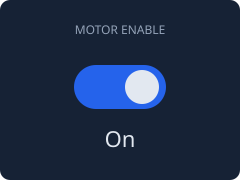
switch
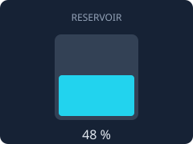
tank
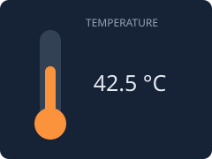
thermometer